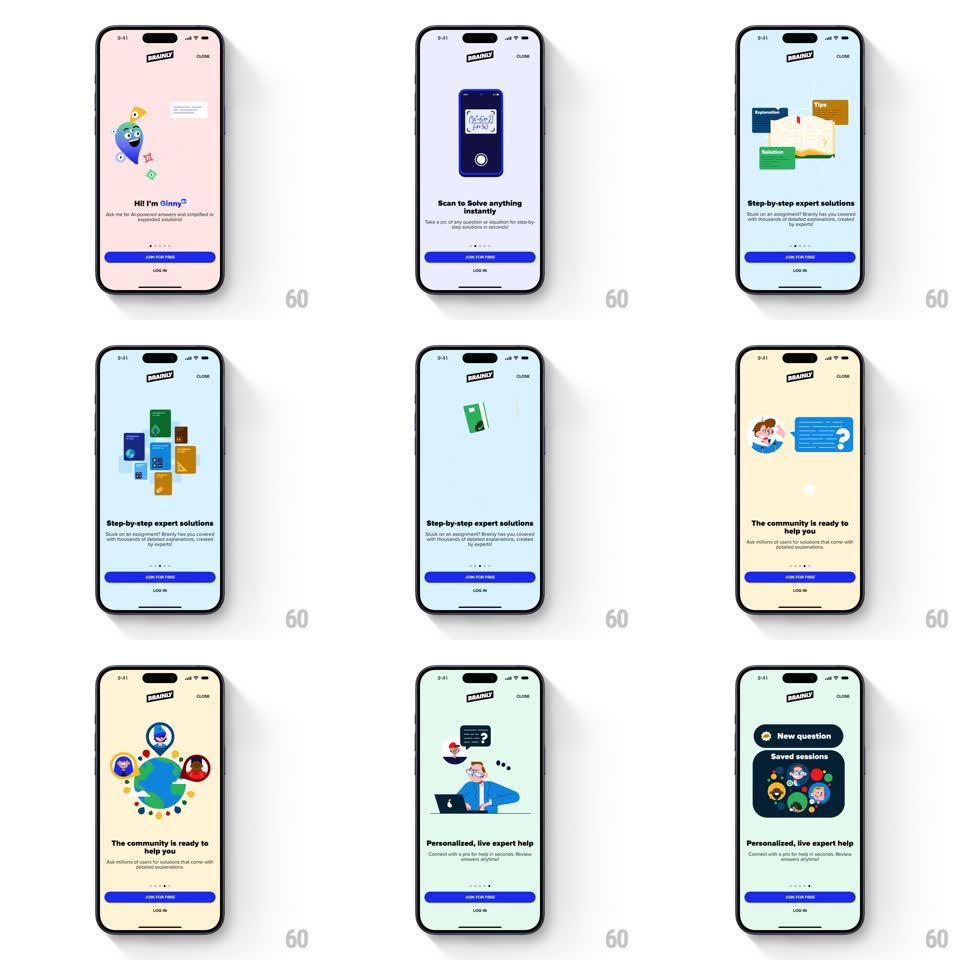

Media
Frame-by-frame

Rebuild this animation 1:1: Brainly's onboarding carousel - auto-advancing pastel story pages starring the Ginny AI mascot, with sliding illustrations and a pinned join CTA.

Rebuild this animation 1:1: Brainly's onboarding carousel - auto-advancing pastel story pages starring the Ginny AI mascot, with sliding illustrations and a pinned join CTA. ## Integration Integration: stack-agnostic spec - springs given as stiffness/damping, timed motions as duration + curve; map every value to your framework and animation library of choice. ## Scene A full-screen paged carousel over shifting pastel backgrounds (pink, lavender, light blue, cream, mint): "Hi! I'm Ginny" with the blue blob mascot, "Scan to Solve anything instantly" with a phone mock, "Step-by-step expert solutions" with book illustrations, "The community is ready to help you" with chat bubbles, and "Personalized, live expert help". A purple "JOIN FOR FREE" button, LOG IN link, and page dots stay pinned at the bottom. ## Motion spec Pattern: auto-advancing story carousel with per-page character animation. - Pages auto-advance every ~3s (horizontal slide, 350ms ease-out); swiping takes over 1:1 with snap (spring ~340/26) and resets the timer. - Background color crossfades to each page's pastel (400ms) slightly ahead of the content slide. - Ginny mascot page: the mascot bobs (translateY +-6px, 1.6s sine loop) with its lightbulb flashing (scale 1 to 1.15 + glow, 800ms loop); speech-card illustrations slide in from alternating sides (300ms, ease-out). - Scan page: the phone mock rises (translateY 24px to 0, 350ms) while a scan frame sweeps over its screen (a line traveling top to bottom, 1.2s, repeating once). - Solutions page: book and tip cards pop in (scale 0.8 to 1, spring ~420/22, 80ms stagger). - Community page: chat bubbles alternate in from left/right (250ms each) like a conversation being typed. - Page dots: active dot stretches to a pill (width 8px to 20px, 200ms) and fills purple; it also acts as the auto-advance progress, filling over the 3s. ## Calibration - Auto-advance pauses while the user touches the carousel and for 5s after a manual swipe. - Mascot bob and page timer run on independent clocks; bobbing never restarts on page change. ## Reduced motion No auto-advance; pages crossfade on tap of dots. ## Don't miss - The CTA area never moves - only the story content pages. - Each page's pastel is full-bleed; there are no card containers around the illustrations.